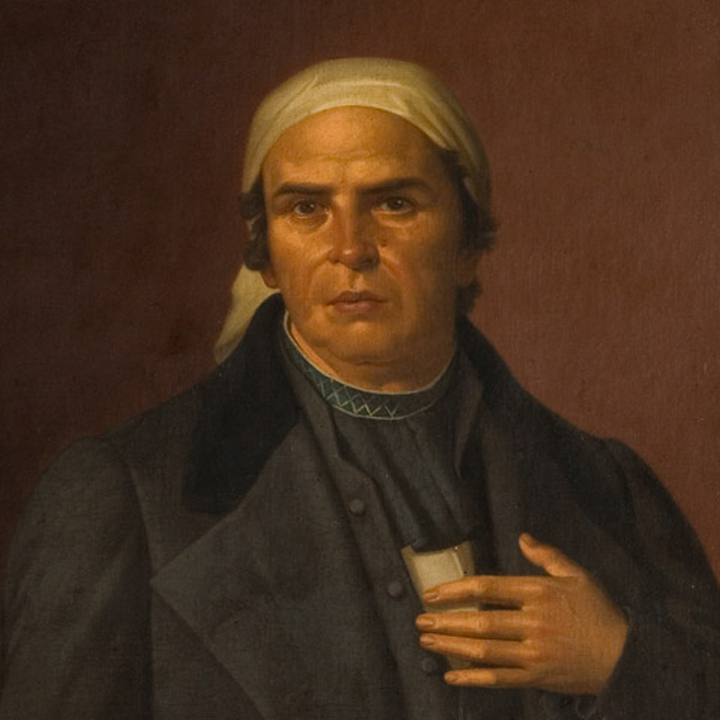
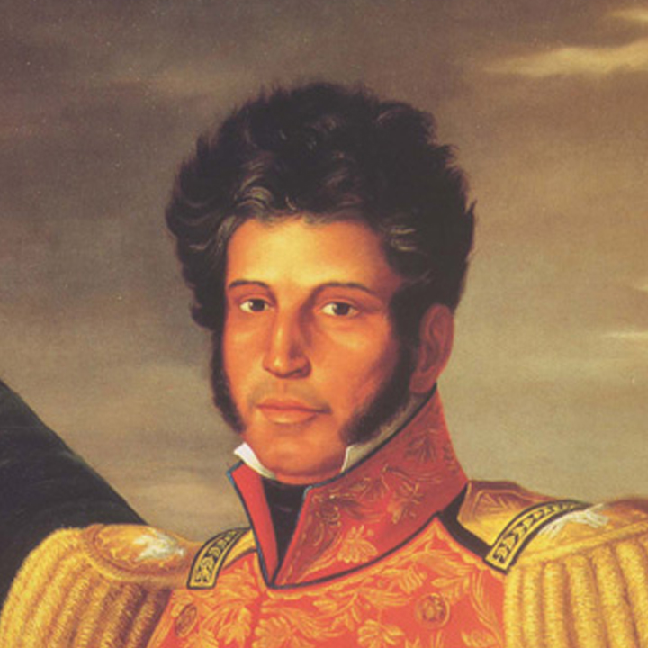
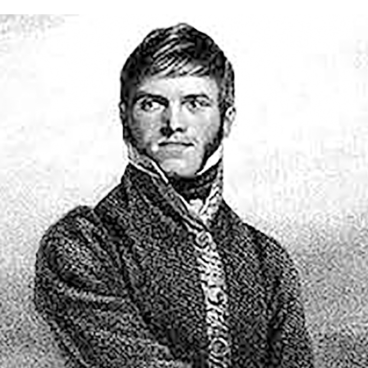
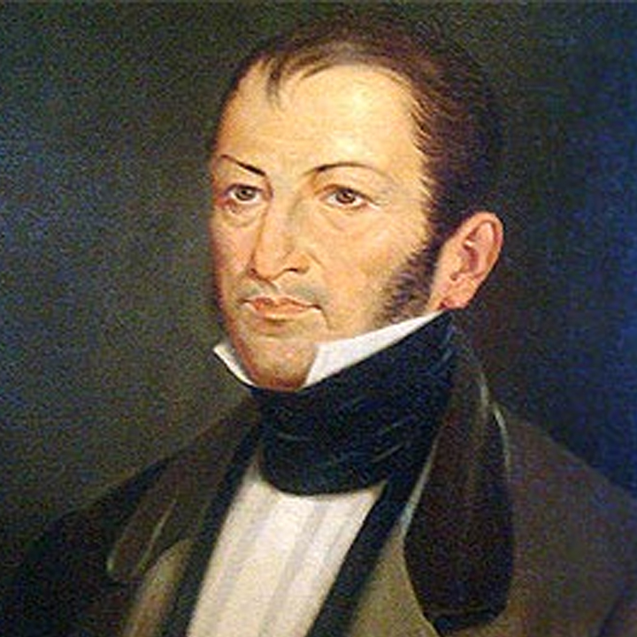
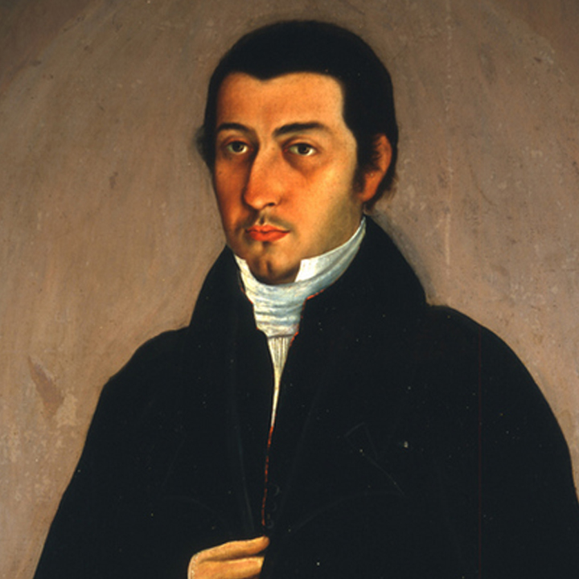
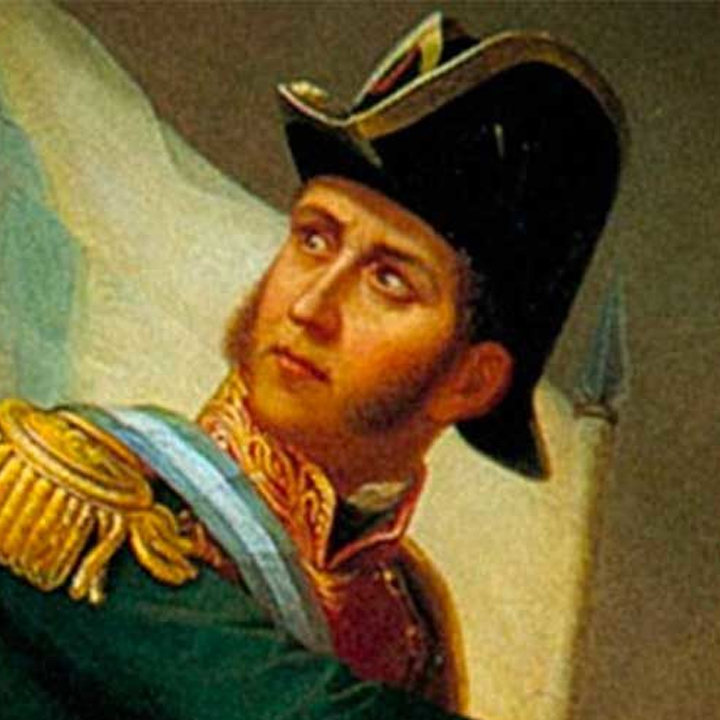
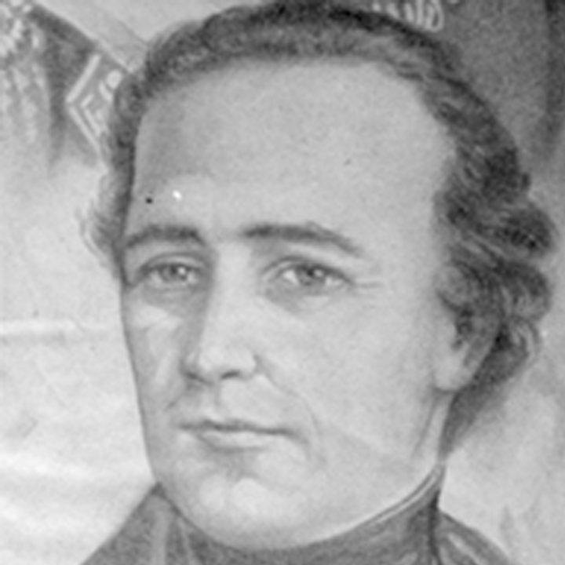
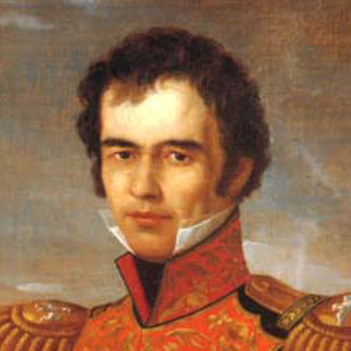
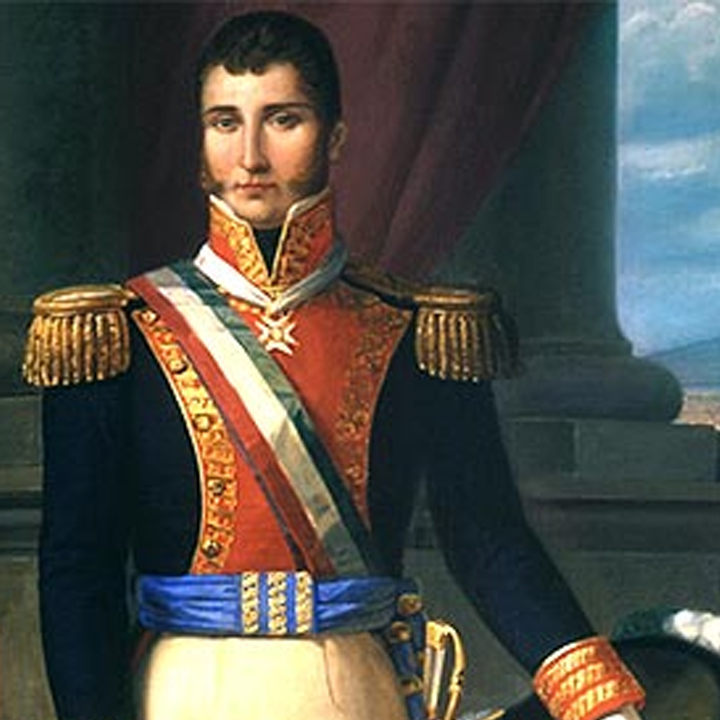
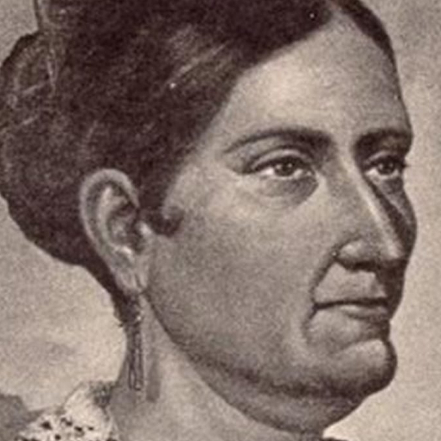

Miguel Hidalgo y Costilla nació en la Hacienda de Corralejo en Pénjamo,
Guanajuaton el 8 de mayo de 1753. Sus padres fueron Cristóbal Hidalgo y Costilla
y Ana María Gallaga. A los 17 años se convirtió en maestro de Filosofía y Teología.
En 1778 se ordenó Sacerdote.
En la madrugada del 16 de septiembre de 1810, lanzó el famoso "Grito de Dolores"
arengando al pueblo a tomar las armas y luchar contra los españoles que apoyaban
al José Bonaparte como nuevo rey de España.
El cura Hidalgo lideró un ejército patriota y organizó un gobierno en Guadalajara.
Aquí decretó la abolición de la esclavitud y derogó los tributos indígenas. Pero los
realistas recuperaron posiciones y lo derrotaron en la batalla de Puente de Calderón
(17 de enero de 1811). Hidalgo intentó escapar a Estados Unidos, pero fue
capturado. Murió fusilado en Chihuahua el 30 de julio de 1811. Su cabeza fue
expuesta en la Alhóndiga de Granaditas, hasta la consumación de la Independencia,
junto con las de Jiménez, Aldama y Allende. Sus restos descansan en la Columna
de la Independencia. Su nombre está inscrito con letras de oro en el Muro de Honor
de la Cámara de Diputados.
José María Morelos y Pavón

José María Morelos nació en Valladolid (Michoacán) el 30 de septiembre de 1765.
Sus padres fueron José Manuel Morelos y Juana Pérez-Pavón. Estudió en el
Seminario de Valladolid y se graduó en Artes en la Real y Pontificia Universidad de
México. Desde 1798 fue cura de varios pueblos de Michoacán.
En 1810 se incorporó a las filas de Miguel Hidalgo, quien lo nombró jefe de los
insurgentes del sur de México, y le encargó tomar Acapulco. Después de la muerte
de Hidalgo (1811), Morelos conquistó la mayor parte del sur y centro del país. En
1812, tomó Oaxaca.
También organizó el Congreso de Anáhuac, el que en 1814 aprobó la primera
Constitución de Apatzingán, que tuvo carácter liberal republicano. Sin embargo, los
criollos le negaron ayuda, y apoyaron la restauración absolutista del rey Fernando
VII y la sanguinaria represión del virrey Félix María Calleja. Tras varios reveses
militares, Morelos fue capturado en noviembre de 1815. Fue condenado por herejía
y traición. Murió fusilado el 22 de diciembre de 1815. Sus restos descansan en la
Columna de la Independencia. Su nombre está inscrito con letras de oro en el Muro
de Honor de la Cámara de Diputados.
Vicente Guerrero

Nació en Tixtla, en el actual estado de Guerrero, el 10 de agosto de 1782. Fue
presidente constitucional de México del 1 de abril al 17 de diciembre de 1829. Murió
en Cuilapan, Oaxaca, el 14 de febrero de 1831.
Era un peón en las haciendas azucareras de Tierra Caliente cuando se unió a la
Guerra de Independencia. A la muerte de Morelos, fue reconocido como
generalísimo de los ejércitos insurgentes y, de hecho, el último de sus caudillos. En
1821 aceptó pactar con Agustín de Iturbide la Independencia y se adhirió al Plan de
Iguala. Se pronunció contra Iturbide cuando éste se convirtió en emperador y, en
contraparte, apoyó el establecimiento de la República. En 1828 perdió las
elecciones presidenciales, pero gracias al “Motín de la Acordada” consiguió que el
Congreso lo pusiera al frente del Ejecutivo. Meses después se rebeló en su contra
el vicepresidente Anastasio Bustamante, a quien salió a combatir. Durante su
ausencia, el Congreso lo declaró “imposibilitado mentalmente para gobernar”. Sin
apoyos de ninguna especie, Guerrero se refugió en las montañas del sur. A
principios de febrero de 1831 fue traicionado y fusilado. Sus restos descansan en la
Columna de la Independencia.
Su nombre está inscrito con letras de oro en el Muro de Honor de la Cámara de
Diputados.
Francisco Javier Mina

Francisco Javier Mina (Xavier) nació en Navarra (España) el 6 de julio de 1789. Fue
hijo de Juan José Mina y de María Larrea. Estudió matemáticas y humanidades en
el Seminario de Pamplona.
Desde 1808 contra las tropas napoleónicas que invadieron España. En 1810, fue
capturado por los franceses. Estuvo encarcelado en París hasta 1814. Al regresar
a España se unió a los liberales que exigían el respeto a la Constitución de Cádiz,
por lo que fue perseguido por los seguidores de Fernando VII. Esto lo obligó a
refugiarse en Inglaterra.
En marzo de 1817 llegó a Tamaulipas para colaborar en la Independencia de
México. Se internó en San Luis Potosí, donde intervino en varias batallas hasta que
fue capturado el 27 de octubre de 1817 en Guanajuato. Fue fusilado en el Cerro del
Borrego el 11 de noviembre del mismo año. Sus restos descansan en la Columna
de la Independencia. Su nombre está inscrito con letras de oro en el Muro de Honor
de la Cámara de Diputados.
Nicolás Bravo

Nació en Chilpancingo, en el actual estado de Guerrero, el 10 de septiembre de
1786. Ocupó la Presidencia de México en tres ocasiones: del 11 al 17 de julio de
1839, como sustituto; con la misma designación, del 26 de octubre de 1842 al 14 de
mayo del año siguiente; y como presidente interino, entre el 28 de julio y el 6 de
agosto de 1846. Murió en la hacienda de Chichihualco, Guerrero, el 22 de abril de
1854.
Insurgente de intachable trayectoria, se convirtió en el hombre de confianza de José
María Morelos. Militar valeroso y magnánimo con el enemigo, en una ocasión
perdonó la vida a 200 realistas. Cayó preso en 1817; al salir en libertad, apoyó el
Plan de Iguala. Fue el primer vicepresidente de México (1824-1829), jefe de
operaciones contra Vicente Guerrero (1829-1831), presidente del Congreso y jefe
del Ejército del Norte (1837). Su notorio historial militar no tuvo equivalente en su
actividad política. En las tres ocasiones que ocupó la Presidencia fungió como
protector de los intereses de Antonio López de Santa Anna. Como gobernante, fue
medroso y tibio. En 1842 disolvió el Congreso, que pretendía discutir una nueva
Constitución contraria al caudillo veracruzano. Más tarde, en 1847, fue comandante
en jefe de la capital del país, posición desde la que organizó la defensa del Castillo
de Chapultepec frente a la invasión estadounidense.
Sus restos descansan en la Columna de la Independencia. Su nombre está inscrito
con letras de oro en el Muro de Honor de la Cámara de Diputados.
Juan Aldama

Nació en San Miguel el Grande, Guanajuato. Hermano de Ignacio y tío de Mariano
y Antonio, del mismo apellido, héroes también de la Independencia. Capitán del
Regimiento de la Reina, conspiraba desde 1809.
Enterado del descubrimiento de la subversión en septiembre de 1810, marchó a
Dolores para prevenir a Hidalgo. Quiso impedir el inicio de la lucha. Recibió en
Celaya el grado de mariscal. Como teniente coronel participó en la batalla del Monte
de las Cruces. Se opuso, con Allende, a retirarse y sostuvo la conveniencia de
marchar sobre la capital. Acompañó a Allende a defender Guanajuato; tomó parte
en la batalla del Puente de Calderón.
Marchó hacia el Norte y propuso trasladarse a Estados Unidos para buscar
elementos de guerra. Sorprendido con los caudillos de la Independencia en Acatita
de Baján, se le llevó a Chihuahua donde se le procesó. Lo fusilaron el 26 de junio
de 1811 y su cabeza fue expuesta en la Alhóndiga de Granaditas, en Guanajuato.
En 1823 lo declararon Héroe de la Patria. León de los Aldama, en Guanajuato, lleva
ese nombre en honor de los insurgentes de ese apellido. Sus restos descansan en
la Columna de la Independencia. Su nombre está inscrito con letras de oro en
el Muro de Honor de la Cámara de Diputados.
Ignacio Allende Unzaga

Ignacio Allende nació en San Miguel el Grande, hoy de Allende, el 21 de enero de
1769. Sus padres fueron Domingo Allende y María Ana de Unzaga. Siguió la carrera
militar y sirvió en un regimiento de caballería.
Desde 1808 se vinculó a los conspiradores de Querétaro. El 16 de septiembre de
1810 estalló el movimiento emancipador, liderado por el cura Miguel Hidalgo.
Allende fue nombrado Capitán General y asistió a toma de la Alhóndiga de
Granaditas. Después de la victoria en Monte de las Cruces propuso la toma de
Ciudad de México, pero el cura Hidalgo ordenó el repligue. Después de la derrota
en Puente de Calderón, Hidalgo fue destituido y Allende asumió el mando del
ejército patriota.
Cuando intentaba reorganizar sus fuerzas, Allende fue capturado en Acatita de
Baján. Los realistas lo llevaron a Chihuahua, donde lo fusilaron el 26 de junio de
1811. Su cabeza fue expuesta en la Alhóndiga de Granaditas, hasta la consumación
de la Independencia, junto con las de Hidalgo, Aldama y Jiménez. Sus restos
descansan en la Columna de la Independencia. Su nombre está inscrito con letras
de oro en el Muro de Honor de la Cámara de Diputados, pero no tiene estatua en el
Paseo de la Reforma, al igual que la Corregidora de Querétaro.
Mariano Jiménez

Mariano Jiménez nació en San Luís Potosí el 18 de agosto de 1781. Realizó sus
estudios básicos en su ciudad natal y después partió a la Ciudad de México para
seguir la carrera de ingeniero de minas en el Colegio de Minería, habiéndose
graduado en el año de 1804. Como era razonable esperar, decidió establecerse en
la ciudad de Guanajuato y allí contrajo matrimonio.
Apenas unos meses después de su enlace matrimonial, Don Miguel Hidalgo dio el
grito de independencia en Dolores, Guanajuato y fue el 28 de septiembre de 1810,
cuando Jiménez se presentó ante el caudillo Miguel Hidalgo y Costilla para ofrecer
sus servicios en favor de la causa. Cuando realizó el ataque a la Alhóndiga de
Granaditas el joven ingeniero Jiménez lo acompañó en la lucha. En virtud de sus
conocimientos técnicos, Hidalgo le asignó la tarea de construir cañones, trabajo que
Jiménez realizo con presteza y singular eficiencia. Obtiene el grado de coronel y es
puesto a la vanguardia del ejército y a cargo de la línea de artillería. Jiménez obtiene,
junto con Allende un sonado triunfo en la batalla de Las Cruces y es ascendido a
teniente general.
Por órdenes de Hidalgo, Mariano Jiménez viajó a la ciudad de México en misión
pacífica, para solicitar al Virrey la entrega de la capital al movimiento
independentista, pero la respuesta fue la amenaza de repelerlo violentamente.
Después de participar en varias de las acciones militares del movimiento de
independencia, en Consejo de Generales se tomó la decisión de nombrar a Jiménez
general en jefe del Ejército del Norte. Cuando iba camino de Saltillo, se topó con el
ejército realista de Antonio Cordero a la altura de Agua Nueva. Tras reñida batalla
Cordero salió derrotado, recuperando los insurgentes el armamento y para su buena
suerte, muchos de los hombres de la parte enemiga que recibieron el indulto de
Jiménez y decidieron unirse a la causa de la Independencia. En Saltillo Mariano
Jiménez se reunió con los demás hombres del movimiento y con ellos se dirigió
rumbo a los Estados Unidos de acuerdo con el plan que se habían trazado. Pero la
fortuna les dio la espalda y al llegar a Acatita de Baján fueron sorprendidos y
trasladados a Chihuahua, para hacerles un juicio y dictarles sentencia de muerte.
Jiménez fue fusilado el 26 de julio de 1811, junto con Juan Aldama e Ignacio Allende.
Su cabeza fue expuesta en la Alhóndiga de Granaditas, hasta la consumación de la
Independencia, junto con las de Hidalgo, Aldama y Allende.
Sus restos reposan en el mausoleo de la Columna de la Independencia en el Paseo
de la Reforma. Su nombre está grabado con letras de oro en el Muro de Honor de
la Cámara de Diputados y tiene una estatua en el Paseo de la Reforma.
Guadalupe Victoria

Nació en Tamazula, Durango, en septiembre de 1786. Fue el primer presidente de
los Estados Unidos Mexicanos, cargo que ocupó del 10 de octubre de 1824 al 31
de marzo de 1829. Murió en Perote, Veracruz, el 20 de marzo de 1843.
Su nombre original fue José Ramón Adaucto Fernández y Félix. Estudió en el
seminario de Durango y en el Colegio de San Ildefonso de la Ciudad de México.
Abandonó sus estudios para unirse a José María Morelos y Pavón. Fue un
destacado insurgente que ejerció el mando en la provincia de Veracruz. En 1821
lanzó el Manifiesto de Santa Fe y se declaró contrario a Iturbide, postura que
mantuvo al colaborar con Santa Anna en la proclamación del Plan de Casa Mata.
Apoyó la Constitución de 1824. Su prestigio le valió ser electo primer presidente de
la República. Con su mandato se inauguró en el país la forma republicana de
gobierno. Desde el poder, Victoria enfrentó tres problemas principales: la difícil
situación económica, el deseo de Estados Unidos de negociar una nueva línea
divisoria para adquirir Texas y las ambiciones de diversos caudillos. Sus restos de
encuentran en la Columna de la Independencia y tiene una estatua en el Paseo de
la Reforma.
Su nombre está inscrito con letras de oro en el Muro de Honor de la Cámara de
Diputados.
Agustín de Iturbide

Nació en Valladolid, hoy Morelia, el 27 de septiembre de 1783. Fue emperador de
México del 21 de mayo de 1822 al 19 de marzo de 1823. Murió el 19 de julio de
1824 en Padilla, Tamaulipas.
Estudió en el seminario de su ciudad natal. Nombrado comandante del Ejército del
Sur en 1820, fue comisionado por el virrey Apodaca para combatir al último caudillo
insurgente, Vicente Guerrero. Distanciado de las fuerzas realistas, el 24 de febrero
de 1821 proclamó el Plan de Iguala y formó el Ejército Trigarante, con el que entró
a la Ciudad de México el 27 de septiembre siguiente, consumando la independencia
nacional.
Fue ungido como Agustín I el 21 de julio de 1822, dos meses después de que fuera
proclamado emperador. Su mandato pronto comenzó a enfrentar la oposición del
Congreso, al que terminó por disolver, aumentando con ello una creciente
impopularidad. Desde diciembre de 1822, Antonio López de Santa Anna y
Guadalupe Victoria encabezaron un levantamiento en su contra, que terminó por
derrocarlo y enviarlo al exilio. Un año después regresó al país; tras su desembarco
en Soto la Marina, Tamaulipas, fue aprehendido y fusilado. Sus restos descansan
en la Catedral Metropolitana.
Josefa Ortiz de Domínguez

Nació el 19 de abril de 1773 en la ciudad de México. Hija de Juan José Ortiz y
Manuela Girón, quedó, muy niña, bajo el amparo de una hermana.
Fue educada en el Colegio de las Vizcaínas, de donde salió en 1791. Se casó en
secreto con Miguel Domínguez, quien sería corregidor de Querétaro. La boda se
celebró en el Sagrario Metropolitano de la ciudad de México el 24 de enero de 1793.
"La Corregidora" es el nombre con el cual la historia la inmortalizó. Su participación
en la insurgencia fue definitiva. Como era la esposa del corregidor, era un seguro
enlace entre los futuros insurgentes que tenían en la ciudad de Querétaro el centro
de su conspiración y a quienes informaba de todo lo que convenía a la causa. Indujo
a su esposo a participar en la conjura.
Cuando los conspiradores fueron denunciados el corregidor se vio obligado a iniciar
una averiguación formal y ordenar el cateo de la casa donde se guardaba el material
de guerra. Al marchar para realizar estas diligencias, encerró a su mujer, pero ésta
logró enviar noticia de lo ocurrido a Miguel Hidalgo, Ignacio Allende y los Aldama.
Iniciado el movimiento insurgente, la corregidora fue denunciada por el capitán
Arias, se le encerró en el convento de Santa Clara y después fue llevada a la ciudad
de México, donde se le recluyó en el convento de Santa Teresa. Por encontrarse
embarazada, su prisión fue benigna al principio, pero después se le trasladó al
convento de Santa Catarina de Sena, donde permaneció durante tres años.
Ya consumada la Independencia e instalado el Imperio de Iturbide, rechazó el
nombramiento de dama de honor de la emperatriz. Tampoco aceptó ninguna
recompensa por sus servicios a la insurgencia.
Murió en la ciudad de México. Sus restos se depositaron en el convento de Santa
Catalina de Sena y después se llevaron a Querétaro, actualmente reposan en
el Panteón de los Queretanos Ilustres. El Congreso de ese Estado la declaró
Benemérita. Una estatua suya se encuentra en la plaza que lleva su nombre en la
ciudad de Querétaro.